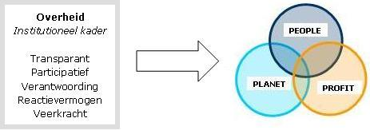
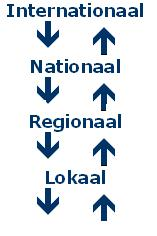

Gemeenten spelen een sleutelrol
Een duurzaamheidsbeleid betekent kortweg dat er in de besluitvorming een heldere afweging wordt gemaakt tussen de consequenties van verschillende keuzes vanuit economisch, sociaal én ecologisch perspectief. Een kant-en-klare oplossing voor de ideale balans is niet voorhanden. Er zullen bewust keuzes gemaakt moeten worden.
‘De overheid zal samenhang moeten bevorderen tussen alle terreinen waar duurzaamheid vorm kan en moet krijgen.’
Directeur MNP, voorwoord tweede duurzaamheidsverkenning 2007

Duurzame keuzes hangen vooral af van de afweging die de politiek (en dus de burger) tussen verschillende belangen maakt. Derhalve is het creëren van lokaal draagvlak voor duurzame ontwikkeling en gerelateerde (internationale) afspraken) een belangrijke factor voor succes.
’Duurzame ontwikkeling kan niet zonder actieve burgers. Participatie is een must.’
Gemeente voor Duurzame Ontwikkeling, Vereniging voor lokale natuur- en milieucommunicatie, oktober 2008
Denk mondiaal, Handel lokaal
Als belangrijke (mondiale) vraagstukken en daaraan gerelateerde (internationale) afspraken, om samen aan een oplossing te werken, niet verder vertaald worden naar lagere overheden, dan blijven het niet meer dan ‘papieren tijgers’.

Een ‘Millennium Gemeente’ is een gemeente die op één of meerdere manieren actief is of wil worden en die bewust uitdragen ‘Millennium Gemeente’ te zijn. Iedere gemeente kan een Millennium gemeente worden!